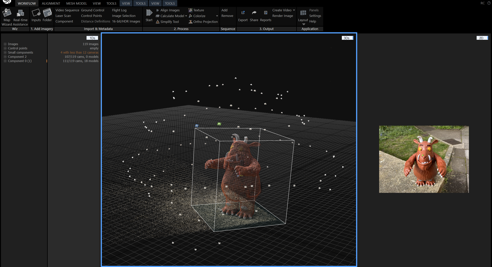
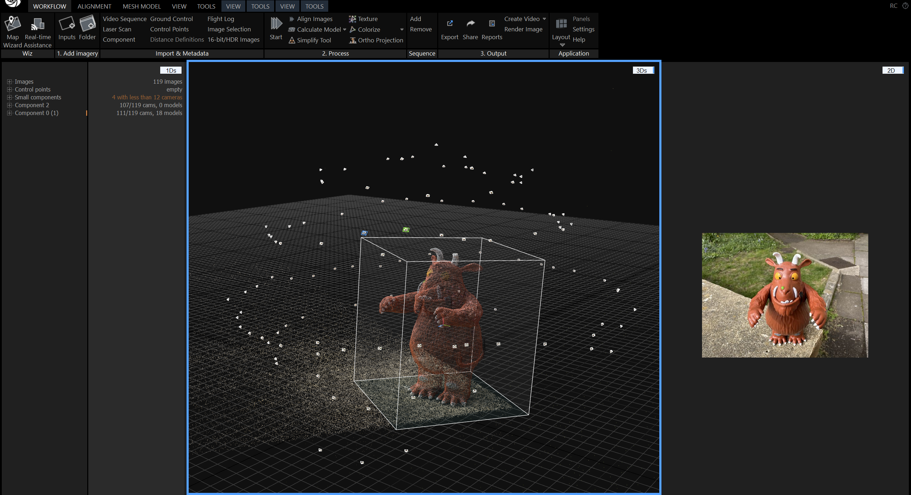

Augmented Gruffalo
Augmented Gruffalo brought the story of "The Gruffalo" to life using an augmented reality (AR) app. This AR app illustrate the story of the classic children book "The Gruffalo" by scanning the physical book and using virtual objects. The storyline covers the mouse encountering the fox, the owl, the snake, and finally the Gruffalo, culminating in the mouse being eaten by Gruffalo. Developed over two mounths by using AR Foundation and Vuforia on Unity, I contributed the encounter of Gruffalo in the project, with skills of AR tracking, raycasting, photogrammetry, 3D UI and animations.
 
